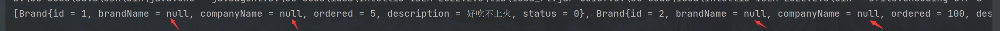
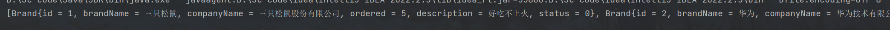
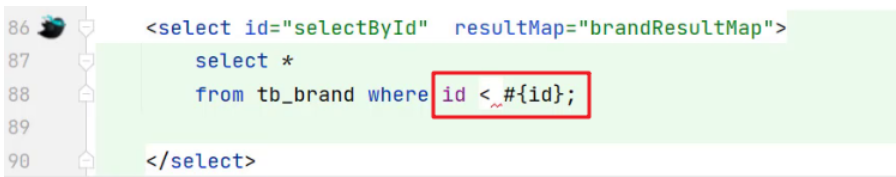

02_Mybatis练习
前面记录了mybatis，它是一种简化jdbc开发操作关系型数据库的持久层框架。下面我们用mybatis进行一些简单的业务来操作mysql数据库。基础的操作和代码我就不完整的展示了，我就记录一下比较容易出错的地方和需要注意的细节了。
Mybatis CRUD
查询全部
selectAll操作很简单，但是我们发现有些数据没有被封装成功，仍然是null：

这是为什么呢，原因还要从mapper代理开发的过程来说起。因为在代理开发中通过接口代理对象调用接口中的函数，再在相应的sql映射文件中找sql语句：
1 | select * from tb_brand; |
找到的sql语句没问题，而它在编译的时候是变成了：
1 | select id,brand_name,company_name,ordered,description,status from tb_brand; |
sql语句执行后会从数据库中select出满足条件的数据，将其封装成定义的Brand类的对象并通过List集合的形式返回。但是在mapper代理开发的过程中封装成Brand对象的过程是自动进行的，那么mybatis并不知道brand_name数据应该被set成Brand对象中的brandName属性，这就是问题的关键。
要解决这个问题的思路就是将二者形成映射关系，让mybatis在封装的时候能将其对应上。目前在mybatis上有两种解决的方案：
给字段起别名
直接在sql语句中用
AS起别名即可，但是这样操作非常麻烦！还有一种方法，mybatis提供了sql片段可以提高sql语句的复用性，但仍然非常麻烦而且不灵活：将需要复用的sql片段抽取到
标签中，在sql语句中使用 引用即可。
使用
resultMap映射在
sql映射配置文件中使用resultMap定义属性和字段的映射关系：1
2
3
4
5
6
7
8
9
10
11
12<resultMap id="brandResultMap" type="brand">
<!--
id：完成主键字段的映射
column：表的列名
property：实体类的属性名
result：完成一般字段的映射
column：表的列名
property：实体类的属性名
-->
<result column="brand_name" property="brandName"></result>
<result column="company_name" property="companyName"></result>
</resultMap>标签的 id属性，要在下面sql映射文件的sql语句标签中引用，表示在这段sql代码中使用了如上的resultMap映射关系以自动封装数据；而type属性则和sql语句中的type一致即可，都指向pojo中的某个实体类。1
2
3<select id="selectAll" resultType="brand" resultMap="brandResultMap">
select * from tb_brand;
</select>
现在再看从封装到Brand对象中的数据就没问题了：

按照id查询
在这里记录一下如何在映射配置文件的sql语句中使用参数占位符。
这是在映射文件中的sql语句：
1 | <select id="selectById" resultMap="brandResultMap" resultType="brand"> |
mybatis中提供了两种参数占位符：
#{} ：执行SQL时，会将 #{} 占位符替换为？，将来自动设置参数值，可以看出使用#{} 底层使用的是
PreparedStatement${} ：拼接SQL。底层使用的是
Statement，会存在SQL注入问题，所以不使用它。
对于有参数的mapper接口方法，我们在sql映射配置文件中应该配置
ParameterType来指定参数类型。只不过该属性都可以省略。
还需要注意的一点是可能会在sql映射文件中的sql语句中用到一些特殊字符，比方说：
xml文件会将sql中的”<”、”>”识别成标签符号，所以需要用相应的转义字符替代，这个用到的时候网上一搜就行了。
多条件查询
如何编写接口方法：
- 使用
@Param("参数名称")标记每一个参数，在映射配置文件中就需要使用#{参数名称}进行占位
1 | List<Brand> selectByCondition( int status, String companyName, String brandName); |
- 将多个参数封装成一个 实体对象 ，将该实体对象作为接口的方法参数。该方式要求在映射配置文件的SQL中使用
#{内容}时，里面的内容必须和实体类属性名保持一致。
1 | List<Brand> selectByCondition(Brand brand); |
- 将多个参数封装到map集合中，将map集合作为接口的方法参数。该方式要求在映射配置文件的SQL中使用
#{内容}时，里面的内容必须和map集合中Key的名称一致。
1 | List<Brand> selectByCondition(Map map); |
如何使用动态SQL：用户在输入条件时，肯定不会所有的条件都填写
1 | <select id="selectByCondition" resultMap="brandResultMap"> |
单个条件的动态sql：
用
里面 标签，相当于 switch和case。
添加
注意1：如果要通过add、update等对数据库里的数据进行改动，那需要在测试类中手动使用
sqlSession.commit()提交事务。注意2：主键返回——在数据添加成功后，有时候需要获取插入数据库数据的主键。
- useGeneratedKeys：是够获取自动增长的主键值。true表示获取
- keyProperty ：指定将获取到的主键值封装到哪儿个属性里
1 | <insert id="add" useGeneratedKeys="true" keyProperty="id"> |
修改
修改肯定不会修改数据所有的属性，<*set*> 标签可以用于动态包含需要更新的列，忽略其它不更新的列。
批量删除
编写SQL时需要遍历数组来拼接SQL语句，Mybatis 提供了 foreach 标签供我们使用。
foreach 标签
用来迭代任何可迭代的对象（如数组，集合）。
- collection 属性：
- mybatis会将数组参数，封装为一个Map集合。
- 默认：array = 数组
- 使用@Param注解改变map集合的默认key的名称
- mybatis会将数组参数，封装为一个Map集合。
- item 属性：本次迭代获取到的元素。
- separator 属性：集合项迭代之间的分隔符。
foreach标签不会错误地添加多余的分隔符。也就是最后一次迭代不会加分隔符。 - open 属性：该属性值是在拼接SQL语句之前拼接的语句，只会拼接一次
- close 属性：该属性值是在拼接SQL语句拼接后拼接的语句，只会拼接一次
1 | <!-- 批量删除 --> |
接口参数是多个时，在每个参数上都使用
@Param注解。这样代码的可读性更高。
1 | User select( String username, String password); |
注解开发CRUD
使用注解开发会比使用sql配置文件开发更加方便，使用了注解，就不需要再映射配置文件中书写对应的 statement。
官方文档是这么说的：

所以给出的结论是：简单sql用注解开发，复杂sql仍然用sql映射配置文件。
举个例子：
1 | /** |